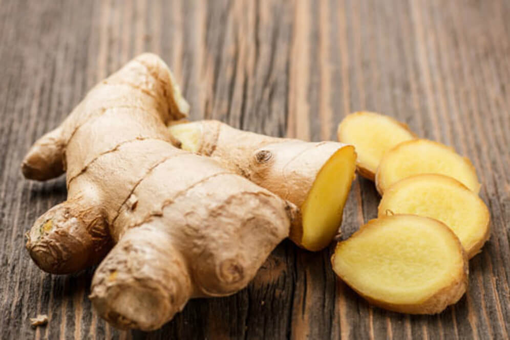

 Kencur (Kaempferia galanga L.) adalah salah satu jenis empon-empon/tanaman obat yang tergolong dalam suku temu-temuan (Zingiberaceae). Rimpang atau rizoma tanaman ini mengandung minyak atsiri dan alkaloid yang dimanfaatkan sebagai stimulan. Nama lainnya adalah cekur (Malaysia) dan pro hom (Thailand). Dalam pustaka internasional (bahasa Inggris) kerap terjadi kekacauan dengan menyebut kencur sebagai lesser galangal (Alpinia officinarum) maupun zedoary (temu putih), yang sebetulnya spesies yang berbeda dan bukan merupakan rempah pengganti. Terdapat pula kerabat dekat kencur yang biasa ditanam di pekarangan sebagai tanaman obat, temu rapet (K. rotunda Jacq.), tetapi mudah dibedakan dari daunnya. Nama kencur dipinjam dari bahasa Sanskerta, kachora, कचोर, yang berarti temu putih (Curcuma zedoaria).